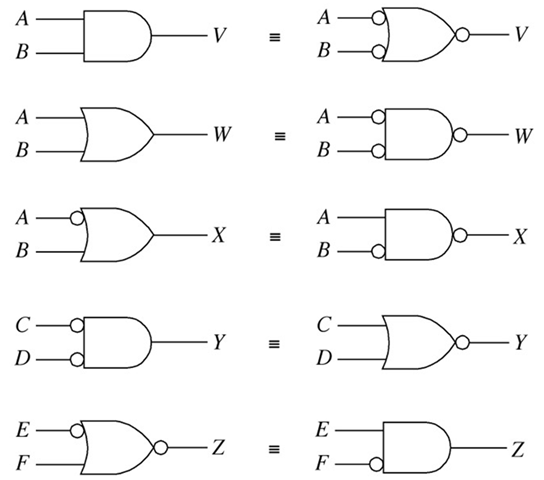
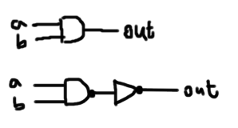
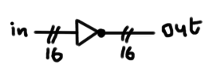
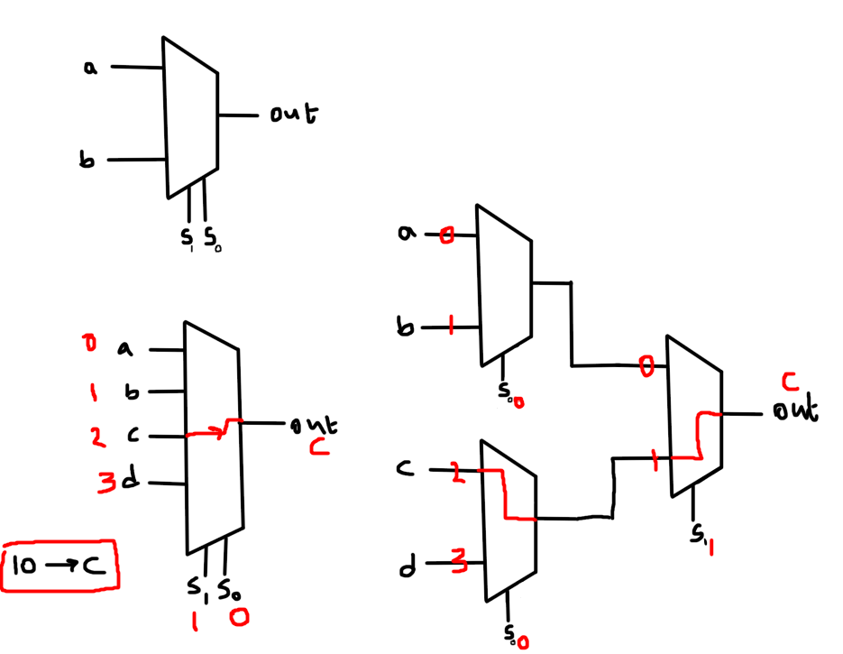
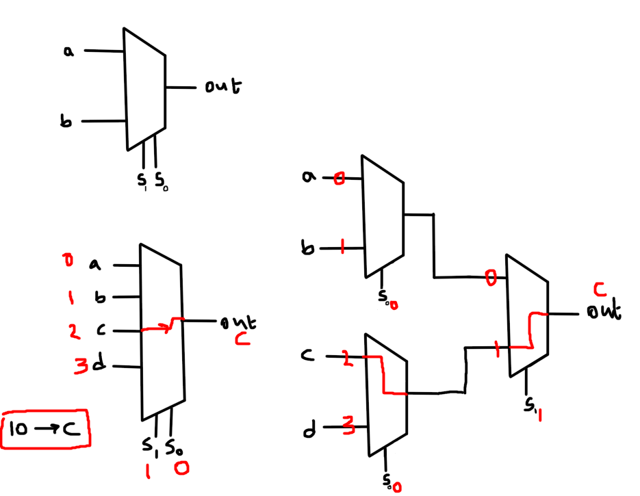
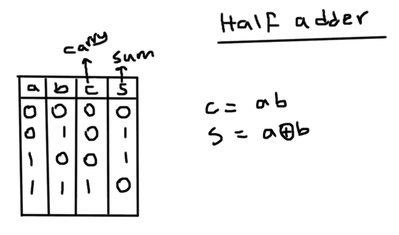
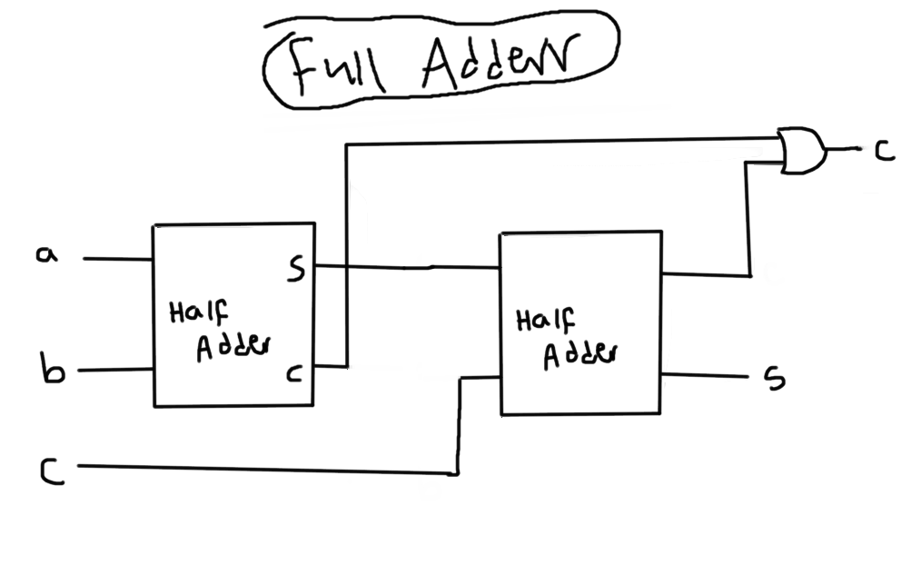
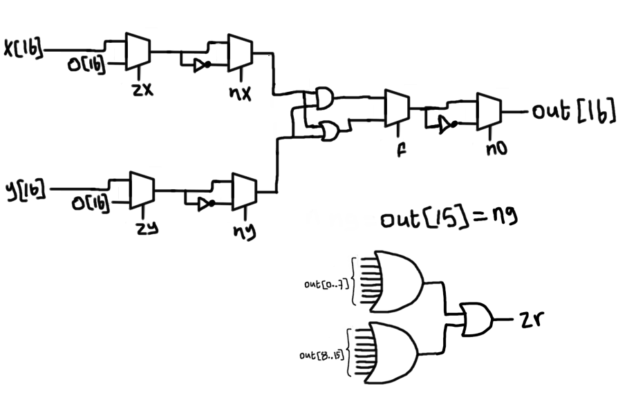
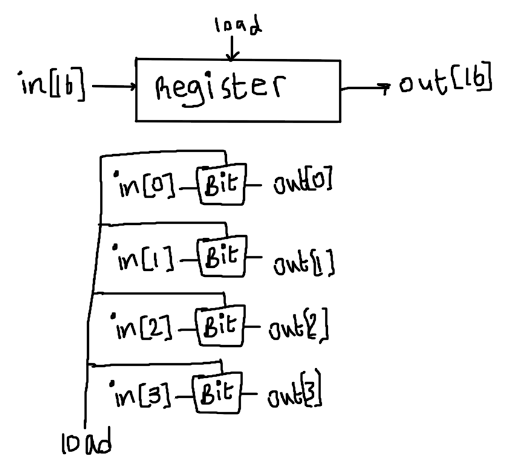
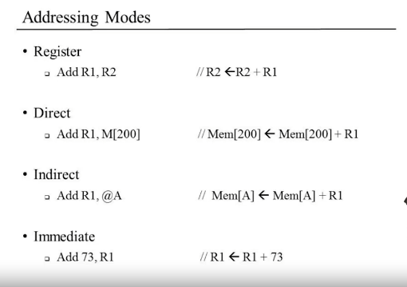

nand2tetris_w1
example stub file for XOR Gate:
- imagine an XOR gate with two inputs and an output
a,bandout - we then fill the actuall implementation of the gate at the
PARTSsection - construct the code at
PARTSsection from left to right/input to output of the image as shown below

CHIP Xor {
IN a, b;
OUT out;
PARTS:
// Put your code here:
Not(in=a,out=Nota);
Not(in=b,out=Notb);
And(a=a,b=Notb,out=aNotb);
And(a=Nota,b=b,out=bNota);
Or (a=aNotb,b=bNota,out=out);
}
Multi-Bit Buses:
- we can declare them in the API of our chip... ex:
a[4] - we can use a single bit of the bus in our implementation... ex: to select the first bit we use
a[0]ora[2]to select the third bit - to use all the array of buses in one operation just use the name of the bus without
[ ]... ex:a - width of internal pins is deduced automatically
- we can use the constants true and false to set or unset buses
example implementation of a 4-bit and gate:
CHIP And4 {
IN a[4], b[4];
OUT out[4];
PARTS:
AND(a=a[0], b=b[0], out=out[0]);
AND(a=a[1], b=b[1], out=out[1]);
AND(a=a[2], b=b[2], out=out[2]);
AND(a=a[3], b=b[3], out=out[3]);
}
nand2tetris_p1
refer to this for nand implementations of basic gates: 
1. Not

/**
* Not gate:
* out = not in
*/
CHIP Not {
IN in;
OUT out;
PARTS:
// Put your code here:
Nand(a=in, b=in, out=out);
}
2. And

/**
* And gate:
* out = 1 if (a == 1 and b == 1)
* 0 otherwise
*/
CHIP And {
IN a, b;
OUT out;
PARTS:
Nand(a=a, b=b, out=aAndb);
Not(in=aAndb, out=out);
}
3. Or

/**
* Or gate:
* out = 1 if (a == 1 or b == 1)
* 0 otherwise
*/
CHIP Or {
IN a, b;
OUT out;
PARTS:
Not(in=a, out=Nota);
Not(in=b, out=Notb);
Nand(a=Nota, b=Notb, out=out);
}
4. Xor

/**
* Exclusive-or gate:
* out = not (a == b)
*/
CHIP Xor {
IN a, b;
OUT out;
PARTS:
Not(in=a, out=Nota);
Not(in=b, out=Notb);
And(a=Nota, b=b, out=NotaAndb);
And(a=a, b=Notb, out=aAndNotb);
Or(a=NotaAndb, b=aAndNotb, out=out);
}
5. Mux

/**
* Multiplexor:
* out = a if sel == 0
* b otherwise
*/
CHIP Mux {
IN a, b, sel;
OUT out;
PARTS:
Not(in=sel, out=Notsel);
And(a=b, b=sel, out=bAndsel);
And(a=a, b=Notsel, out=aAndNotsel);
Or(a=bAndsel, b=aAndNotsel, out=out);
}
6. DMux:

/**
* Demultiplexor:
* {a, b} = {in, 0} if sel == 0
* {0, in} if sel == 1
*/
CHIP DMux {
IN in, sel;
OUT a, b;
PARTS:
Not(in=sel, out=Notsel);
And(a=in, b=Notsel, out=a);
And(a=in, b=sel, out=b);
}
Multi-bit variants:
7. Not16

/**
* 16-bit Not:
* for i=0..15: out[i] = not in[i]
*/
CHIP Not16 {
IN in[16];
OUT out[16];
PARTS:
Not(in=in[0], out=out[0]);
Not(in=in[1], out=out[1]);
Not(in=in[2], out=out[2]);
Not(in=in[3], out=out[3]);
Not(in=in[4], out=out[4]);
Not(in=in[5], out=out[5]);
Not(in=in[6], out=out[6]);
Not(in=in[7], out=out[7]);
Not(in=in[8], out=out[8]);
Not(in=in[9], out=out[9]);
Not(in=in[10], out=out[10]);
Not(in=in[11], out=out[11]);
Not(in=in[12], out=out[12]);
Not(in=in[13], out=out[13]);
Not(in=in[14], out=out[14]);
Not(in=in[15], out=out[15]);
}
we will do the same for And16, Or16 and Mux16!
multi-way variants:
8.Or8Way

/**
* 8-way Or:
* out = (in[0] or in[1] or ... or in[7])
*/
CHIP Or8Way {
IN in[8];
OUT out;
PARTS:
Or(a=in[0], b=in[1], out=out0);
Or(a=in[2], b=in[3], out=out1);
Or(a=in[4], b=in[5], out=out2);
Or(a=in[6], b=in[7], out=out3);
Or(a=out0, b=out1, out=out0Orout1);
Or(a=out2, b=out3, out=out2Orout3);
Or(a=out0Orout1, b=out2Orout3, out=out);
}
9. Mux4Way16
 we can use two 2x1 Mux16 to get a 4x1 Mux16 aka Mux4Way16:

we can use two 2x1 Mux16 to get a 4x1 Mux16 aka Mux4Way16:

CHIP Mux4Way16 {
IN a[16], b[16], c[16], d[16], sel[2];
OUT out[16];
PARTS:
Mux16(a=a, b=b, sel=sel[0], out=out1);
Mux16(a=c, b=d, sel=sel[0], out=out2);
Mux16(a=out1, b=out2, sel=sel[1], out=out);
}
10. Mux8way16
chain them as in the Mux4Way16
CHIP Mux8Way16 {
IN a[16], b[16], c[16], d[16],
e[16], f[16], g[16], h[16],
sel[3];
OUT out[16];
PARTS:
Mux4Way16(a=a, b=b, c=c, d=d, sel=sel[0..1], out=out1);
Mux4Way16(a=e, b=f, c=g, d=h, sel=sel[0..1], out=out2);
Mux16(a=out1, b=out2, sel=sel[2], out=out);
}
11. DMux4Way
chain DMux's as follow:

nand2tetris_p2
1. Half Adder:
just construct the truth table and you will know what to do: 
CHIP HalfAdder {
IN a, b; // 1-bit inputs
OUT sum, // Right bit of a + b
carry; // Left bit of a + b
PARTS:
And(a=a, b=b, out=carry);
Xor(a=a, b=b, out=sum);
}
2. Full Adder:
we will just stick two Half Adders together: 
3.ALU
here is the schematic for our ALU (it's pretty self explainatory) 
// This file is part of www.nand2tetris.org
// and the book "The Elements of Computing Systems"
// by Nisan and Schocken, MIT Press.
// File name: projects/02/ALU.hdl
/**
* The ALU (Arithmetic Logic Unit).
* Computes one of the following functions:
* x+y, x-y, y-x, 0, 1, -1, x, y, -x, -y, !x, !y,
* x+1, y+1, x-1, y-1, x&y, x|y on two 16-bit inputs,
* according to 6 input bits denoted zx,nx,zy,ny,f,no.
* In addition, the ALU computes two 1-bit outputs:
* if the ALU output == 0, zr is set to 1; otherwise zr is set to 0;
* if the ALU output < 0, ng is set to 1; otherwise ng is set to 0.
*/
// Implementation: the ALU logic manipulates the x and y inputs
// and operates on the resulting values, as follows:
// if (zx == 1) set x = 0 // 16-bit constant
// if (nx == 1) set x = !x // bitwise not
// if (zy == 1) set y = 0 // 16-bit constant
// if (ny == 1) set y = !y // bitwise not
// if (f == 1) set out = x + y // integer 2's complement addition
// if (f == 0) set out = x & y // bitwise and
// if (no == 1) set out = !out // bitwise not
// if (out == 0) set zr = 1
// if (out < 0) set ng = 1
CHIP ALU {
IN
x[16], y[16], // 16-bit inputs
zx, // zero the x input?
nx, // negate the x input?
zy, // zero the y input?
ny, // negate the y input?
f, // compute out = x + y (if 1) or x & y (if 0)
no; // negate the out output?
OUT
out[16], // 16-bit output
zr, // 1 if (out == 0), 0 otherwise
ng; // 1 if (out < 0), 0 otherwise
PARTS:
//-------------------x--------------------------//
Mux16(a=x, b=false, sel=zx, out=zxOut); //zx
Not16(in=zxOut, out=NotzxOut); //nx
Mux16(a=zxOut, b=NotzxOut, sel=nx, out=nxOut); //nx
//-------------------y--------------------------//
Mux16(a=y, b=false, sel=zy, out=zyOut); //zy
Not16(in=zyOut, out=NotzyOut); //ny
Mux16(a=zyOut, b=NotzyOut, sel=ny, out=nyOut); //ny
//-------------------f--------------------------//
Add16(a=nxOut, b=nyOut, out=nxOrny); //f=1
And16(a=nxOut, b=nyOut, out=nxAndny); //f=0
Mux16(a=nxAndny, b=nxOrny, sel=f, out=fOut); //f
//-------------------no--------------------------//
Not16(in=fOut, out=NotfOut);
Mux16(a=fOut, b=NotfOut, sel=no, out=out, out[0..7]=OutNibble1, out[8..15]=OutNibble2, out[15]=out15);
//-------------------ng and zf--------------------------//
And(a=out15, b=true, out=ng); //ng
Or8Way(in=OutNibble1, out=out1); //zr
Or8Way(in=OutNibble2, out=out2); //zr
Or(a=out1, b=out2, out=out3); //zr
Not(in=out3, out=zr); //zr
}
nand2tetris_p3
1. 1-Bit Register
goal is to create a register with two inputs, load and in where the in bit will set the content of the register and the load bit will decide whether we read or write.
here is the abstraction and implementation:
// This file is part of www.nand2tetris.org
// and the book "The Elements of Computing Systems"
// by Nisan and Schocken, MIT Press.
// File name: projects/03/a/Bit.hdl
/**
* 1-bit register:
* If load[t] == 1 then out[t+1] = in[t]
* else out does not change (out[t+1] = out[t])
*/
CHIP Bit {
IN in, load;
OUT out;
PARTS:
Mux(a=DFFOut, b=in, sel=load, out=MuxOut);
DFF(in=MuxOut, out=out, out=DFFOut);
}
2. 16-bit Register:
we are just going to stack 1-Bit registers (here is an example below for a 4-Bit register) : 
// This file is part of www.nand2tetris.org
// and the book "The Elements of Computing Systems"
// by Nisan and Schocken, MIT Press.
// File name: projects/03/a/Register.hdl
/**
* 16-bit register:
* If load[t] == 1 then out[t+1] = in[t]
* else out does not change
*/
CHIP Register {
IN in[16], load;
OUT out[16];
PARTS:
Bit(in=in[0], load=load, out=out[0]);
Bit(in=in[1], load=load, out=out[1]);
Bit(in=in[2], load=load, out=out[2]);
Bit(in=in[3], load=load, out=out[3]);
Bit(in=in[4], load=load, out=out[4]);
Bit(in=in[5], load=load, out=out[5]);
Bit(in=in[6], load=load, out=out[6]);
Bit(in=in[7], load=load, out=out[7]);
Bit(in=in[8], load=load, out=out[8]);
Bit(in=in[9], load=load, out=out[9]);
Bit(in=in[10], load=load, out=out[10]);
Bit(in=in[11], load=load, out=out[11]);
Bit(in=in[12], load=load, out=out[12]);
Bit(in=in[13], load=load, out=out[13]);
Bit(in=in[14], load=load, out=out[14]);
Bit(in=in[15], load=load, out=out[15]);
}
3. RAM8
the circuit speaks for itself :p (note i'm also doing it for 4-bits smh)
// This file is part of www.nand2tetris.org
// and the book "The Elements of Computing Systems"
// by Nisan and Schocken, MIT Press.
// File name: projects/03/a/RAM8.hdl
/**
* Memory of 8 registers, each 16 bit-wide. Out holds the value
* stored at the memory location specified by address. If load==1, then
* the in value is loaded into the memory location specified by address
* (the loaded value will be emitted to out from the next time step onward).
*/
CHIP RAM8 {
IN in[16], load, address[3];
OUT out[16];
PARTS:
DMux8Way(in=load, sel=address, a=load1, b=load2, c=load3, d=load4, e=load5, f=load6, g=load7, h=load8);
Register(in=in, load=load1, out=OutRegister1);
Register(in=in, load=load2, out=OutRegister2);
Register(in=in, load=load3, out=OutRegister3);
Register(in=in, load=load4, out=OutRegister4);
Register(in=in, load=load5, out=OutRegister5);
Register(in=in, load=load6, out=OutRegister6);
Register(in=in, load=load7, out=OutRegister7);
Register(in=in, load=load8, out=OutRegister8);
Mux8Way16(a=OutRegister1, b=OutRegister2, c=OutRegister3, d=OutRegister4, e=OutRegister5, f=OutRegister6, g=OutRegister7, h=OutRegister8, sel=address, out=out);
}
4. RAM64,RAM512, RAM5k and RAM16k:
In these we are going to use the same concept...
here is the diagram for the simplest of them, the RAM64:

// This file is part of www.nand2tetris.org
// and the book "The Elements of Computing Systems"
// by Nisan and Schocken, MIT Press.
// File name: projects/03/a/RAM64.hdl
/**
* Memory of 64 Registers, each 16 bit-wide. Out holds the value
* stored at the memory location specified by address. If load==1, then
* the in value is loaded into the memory location specified by address
* (the loaded value will be emitted to out from the next time step onward).
*/
CHIP RAM64 {
IN in[16], load, address[6];
OUT out[16];
PARTS:
DMux8Way(in=load, sel=address[3..5], a=load1, b=load2, c=load3, d=load4, e=load5, f=load6, g=load7, h=load8);
RAM8(in=in, load=load1, address=address[0..2], out=OutRAM1); //0..8
RAM8(in=in, load=load2, address=address[0..2], out=OutRAM2); //9..16
RAM8(in=in, load=load3, address=address[0..2], out=OutRAM3); //17..24
RAM8(in=in, load=load4, address=address[0..2], out=OutRAM4); //25..32
RAM8(in=in, load=load5, address=address[0..2], out=OutRAM5); //33..40
RAM8(in=in, load=load6, address=address[0..2], out=OutRAM6); //41..48
RAM8(in=in, load=load7, address=address[0..2], out=OutRAM7); //49..56
RAM8(in=in, load=load8, address=address[0..2], out=OutRAM8); //57..64
Mux8Way16(a=OutRAM1, b=OutRAM2, c=OutRAM3, d=OutRAM4, e=OutRAM5, f=OutRAM6, g=OutRAM7, h=OutRAM8, sel=address[3..5], out=out);
}
// This file is part of the materials accompanying the book
// "The Elements of Computing Systems" by Nisan and Schocken,
// MIT Press. Book site: www.idc.ac.il/tecs
// File name: projects/03/b/RAM512.hdl
/**
* Memory of 512 registers, each 16 bit-wide. Out holds the value
* stored at the memory location specified by address. If load==1, then
* the in value is loaded into the memory location specified by address
* (the loaded value will be emitted to out from the next time step onward).
*/
CHIP RAM512 {
IN in[16], load, address[9];
OUT out[16];
PARTS:
DMux8Way(in=load, sel=address[6..8], a=load1, b=load2, c=load3, d=load4, e=load5, f=load6, g=load7, h=load8);
RAM64(in=in, load=load1, address=address[0..5], out=OutRAM1);
RAM64(in=in, load=load2, address=address[0..5], out=OutRAM2);
RAM64(in=in, load=load3, address=address[0..5], out=OutRAM3);
RAM64(in=in, load=load4, address=address[0..5], out=OutRAM4);
RAM64(in=in, load=load5, address=address[0..5], out=OutRAM5);
RAM64(in=in, load=load6, address=address[0..5], out=OutRAM6);
RAM64(in=in, load=load7, address=address[0..5], out=OutRAM7);
RAM64(in=in, load=load8, address=address[0..5], out=OutRAM8);
Mux8Way16(a=OutRAM1, b=OutRAM2, c=OutRAM3, d=OutRAM4, e=OutRAM5, f=OutRAM6, g=OutRAM7, h=OutRAM8, sel=address[6..8], out=out);
}
5.PC
here is the diagram:
// This file is part of www.nand2tetris.org
// and the book "The Elements of Computing Systems"
// by Nisan and Schocken, MIT Press.
// File name: projects/03/a/PC.hdl
/**
* A 16-bit counter with load and reset control bits.
* if (reset[t] == 1) out[t+1] = 0
* else if (load[t] == 1) out[t+1] = in[t]
* else if (inc[t] == 1) out[t+1] = out[t] + 1 (integer addition)
* else out[t+1] = out[t]
*/
CHIP PC {
IN in[16],load,inc,reset;
OUT out[16];
PARTS:
Mux16(a=incMuxOut, b=in, sel=load, out=loadMuxOut);
Mux16(a=loadMuxOut, b=false, sel=reset, out=resetMuxOut);
Register(in=resetMuxOut, load=true, out=regOut, out=out);
Inc16(in=regOut, out=incOut);
Mux16(a=regOut, b=incOut, sel=inc, out=incMuxOut);
}
nand2tetris_w4
Machine Language
- Addressing Modes: 
The Hack Language:
- Has 3 registers:
- D Register: for data
- A Register: for storing addresses mainly but can also be used for data
- M Register: for accessing Memory[A] (memory location addresses by A Register)